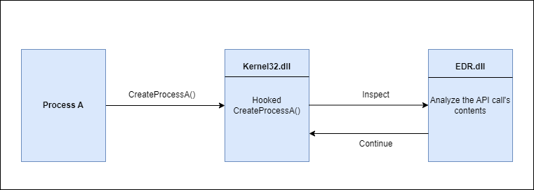
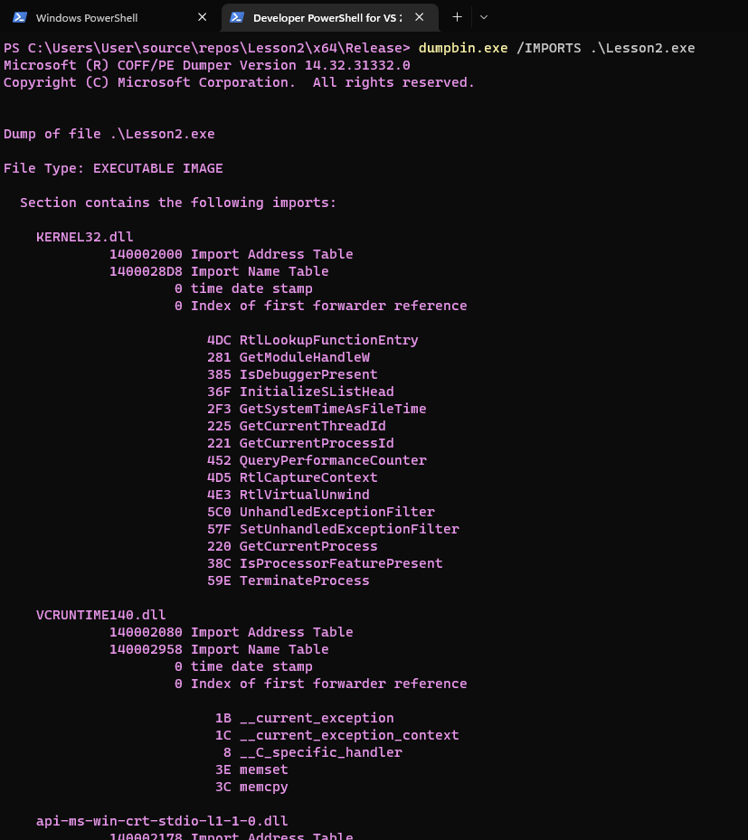

Introduction
Security solutions use several techniques to detect malicious software. It's important for one to understand what techniques security solutions use to detect or classify software as being malicious.
Static/Signature Detection
A signature is a number of bytes or strings within a malware that uniquely identifies it. Other conditions can also be specified such as variable names and imported functions. Once the security solution scans a program, it attempts to match it to a list of known rules. These rules have to be pre-built and pushed to the security solution. YARA is one tool that is used by security vendors to build detection rules. For example, if a shellcode contains a byte sequence that begins with FC 48 83 E4 F0 E8 C0 00 00 00 41 51 41 50 52 51 then this can be used to detect that the payload is a Msfvenom's x64 exec payload. The same detection mechanism can be used against strings within the file.
Signature detection is easy to bypass but can be time-consuming. It's important to avoid hardcoding values in the malware that can be used to uniquely identify the implementation. The code that's presented throughout this handbook attempts to avoid hardcoding values that could be hardcoded and instead dynamically retrieves or calculates the values.
Hashing Detection
Hashing detection is a subset of static/signature detection. This is a very straightforward detection technique, and this is the fastest and simplest way a security solution can detect malware. This method is done by simply saving hashes (e.g. MD5, SHA256) about known malware in a database. The malware's file hash will be compared with the security solution's hash database to see if there's a positive match.
Evading hashing detection is extremely simple, although likely not enough on its own. By changing at least 1 byte in the file, the file hash will change for any hashing algorithm and therefore the file will have a file hash that is likely unique.
Heuristic Detection
Since signature detection methods are easily circumvented with minor changes to a malicious file, heuristic detection was introduced to spot suspicious characteristics that can be found in unknown, new and modified versions of existing malware. Depending on the security solution, heuristic models can consist of one or both of the following:
Dynamic Heuristic Analysis (Sandbox Detection)
Sandbox detection dynamically analyzes the behavior of a file by executing it in a sandboxed environment. While executing the file, the security solution will look for suspicious actions or actions that are classified as malicious. For example, allocating memory is not necessarily a malicious action but allocating memory, connecting to the internet to fetch shellcode, writing the shellcode to memory and executing it in that sequence is considered malicious behavior.
Malware developers will embed anti-sandbox techniques to detect the sandbox environment. If the malware confirms that it's being executed in a sandbox then it executes benign code, otherwise, it executes malicious code.
Behavior-based Detection
Once the malware is running, security solutions will continue to look for suspicious behavior committed by the running process. The security solution will look for suspicious indicators such as loading a DLL, calling a certain Windows API and connecting to the internet. Once the suspicious behavior is detected the security solution will conduct an in-memory scan of the running process. If the process is determined to be malicious, it is terminated.
Certain actions may terminate the process immediately without an in-memory scan being performed. For example, if the malware performs process injection into notepad.exe and connects to the internet, this will likely cause the process to be terminated immediately due to the high likelihood that this is malicious activity.
The best way to avoid behavior-based detection is by making the process behave as benign as possible (e.g. avoid spawning a cmd.exe child process). Additionally, in-memory scans can be circumvented with memory encryption. This is a more advanced topic that will be discussed in future modules.
API Hooking
API hooking is a technique used by security solutions, mainly EDRs, to monitor the process or code execution in real time for malicious behaviors. API hooking works by intercepting commonly abused APIs and then analyzing the parameters of these APIs in real time. This is a powerful way of detection because it allows the security solution to see the content passed to the API after it's been de-obfuscated or decrypted. This detection is considered a combination of real-time and behavior-based detection.
The diagram below shows a high level of API hooking.

There are several ways to bypass API hooks such as DLL unhooking and direct syscalls. These topics will be covered in future modules.
IAT Checking
One of the components that were discussed in the PE structure is the Import Address Table or IAT. To briefly summarize the IAT's functionality, it contains function names that are used in the PE at runtime. It also contains the libraries (DLLs) that export these functions. This information is valuable to a security solution since it knows what WinAPIs the executable is using.
For example, ransomware is used to encrypt files and therefore it will likely be using cryptographic and file management functions. When the security solution sees the IAT containing these types of functions such as CreateFileA/W, SetFilePointer, Read/WriteFile, CryptCreateHash, CryptHashData, CryptGetHashParam, then either the program is flagged or additional scrutiny is placed on it. The image below shows the dumpbin.exe tool being used to check a binary's IAT.

One solution that evades IAT scanning is the use of API hashing which will be discussed in future modules.
Manual Analysis
Despite bypassing all the aforementioned detection mechanisms, the blue team and malware analysts can still manually analyze the malware. A defender well-versed in malware reverse engineering will likely be able to detect the malware. Furthermore, security solutions will often send a copy of suspicious files to the cloud for further analysis.
Malware developers can implement anti-reversing techniques to make the process of reverse engineering more difficult. Some techniques include the detection of a debugger and the detection of a virtualized environment which are discussed in future modules.